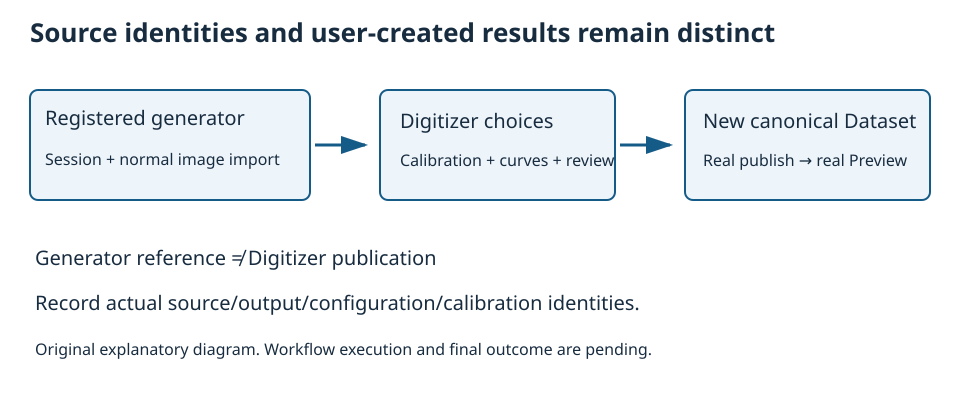
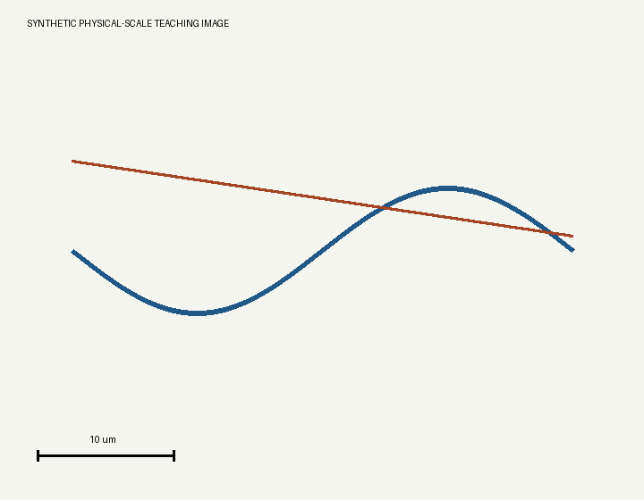
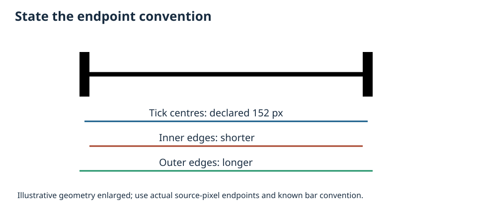
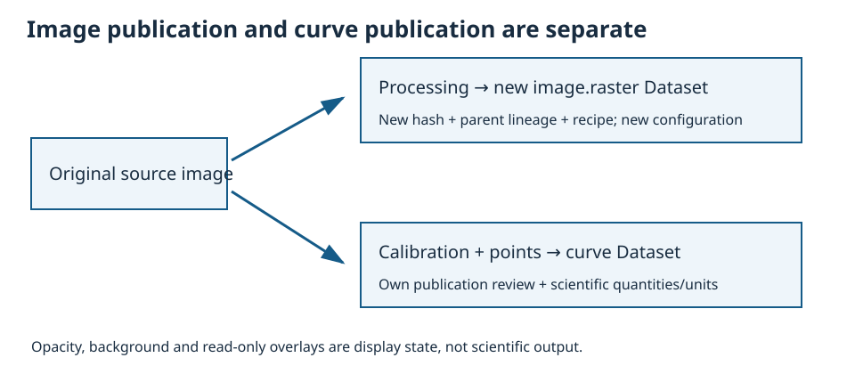
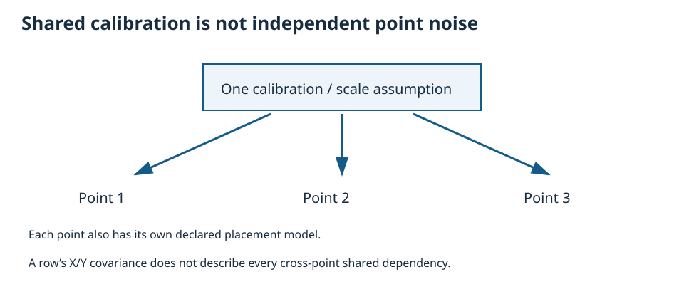

1. Create the registered Session and import the teaching image
Use the actual registered calibrated_digitizer generator in library org.giuxlab.gxtxt.numerical_examples, unchanged Digitizer 2.0.9, Image importer and compatible Dataset Preview. Open this tutorial through common Guides and choose the admitted Open Generate Session… button. It preselects the pair only. In an ordinary browser use GX-TXT’s normal New Session / Generate Session dialog and choose the same pair manually.
- Select an unused name, for example
tutorial03_scale_uncertainty, normal Location/Project, and turn Copy previous Experiment documentation off. Review the dialog and press its ordinary Generate control. - Record actual Session and component/library/generator versions. If unavailable/disabled, retain the diagnostic; this package installs or enables nothing.
- Confirm source
digitizer.calibration.image(100 × 100) and independent referencedigitizer.calibration.pointsexist. Preserve them for the uncertainty exercise. - Download/open the bundled original scale-reference.png as an ordinary local input. Use GX-TXT’s normal Image importer (
acq.image_binary) Acquisition workflow, choose that PNG and a new Dataset ID such astutorial03.scale.source, then complete the ordinary import. - Record the resulting canonical Image Dataset identity, byte hash and decoded 720 × 560 geometry. Compare the input file’s pinned hash in its reference JSON with the actual acquisition provenance. If the normal workflow changes encoding, document input/output identities and geometry; do not assume hashes agree without inspection.

Use ordinary Viewers (expected tile Digitalizer, provider Curve Digitalizer; record actual labels), open the new Image Dataset in Digitizer and create configuration Tutorial 03 — Physical scale. Use common Guides for this external documentation alongside preserved original Help/F1. No vendor Help replacement is claimed.

2. Use the declared centre-to-centre scale bar
The bundled raster is explicitly synthetic, not a micrograph or instrument measurement. It contains two analytic strokes and a high-contrast bar labelled 10 um. Source bar tick centres are (42,510) and (194,510): 152 source pixels. Three-pixel-wide terminal ticks make the centre/inner/outer convention meaningful.

- Choose Auto-calibrate full image, Upward (Cartesian). Confirm original pixel-centre bounds 0…719 by 0…559.
- In Scale using an image scale bar, select Center-to-center (tick centers). Press Detect and click near the middle of the bar. Inspect the magenta proposed line and outlined endpoints; detection does not apply the scale.
- If the wrong segment or edge is selected, choose Endpoints and click the intended tick centres manually. Record actual source-pixel endpoints and the displayed Euclidean distance.
- Enter Actual length 10 and physical unit µm, then Apply scale. Verify the applied green reference line, annotation, units and Y direction. Where supported, change only the X/Y position labels and semantic roles (independent/measured), leaving physical unit text, bounds and axis mapping untouched. Apply the label-only edit, then verify the measured endpoints, physical unit, limits, Y direction and saved scale reference remain. Changing physical units, limits or mapping clears the recorded scale reference; such an edit is not a harmless relabel. Preserve the actual status and restore deliberately with the normal supported action if needed.
Under the ideal declared endpoints, the isotropic factor is 10/152 µm/px, X centre span 719×10/152 ≈ 47.30263158 µm, Y span 559×10/152 ≈ 36.77631579 µm. Cartesian-up mapping is x=px×10/152, y=(559−py)×10/152. Use actual measured endpoints to compute the actual expected factor. A different click must not be silently accepted as exact ideal agreement.

On a separate draft, change Tick reference and observe pending-preview invalidation. The previous applied calibration remains until a new scale is applied. Compare clearing the temporary detection overlay with resetting physical calibration; they are different actions. Preserve the accepted original configuration. A scale bar cannot correct perspective, unequal pixel scales or real instrument calibration errors.
3. Trace and inspect width without inventing uncertainty
3A. Identify both strokes across their crossings
In Curves use New curve for the rust linear stroke, py=180+0.15(px−80), and another for the blue sinusoidal stroke, py=280+70 sin(2π(px−80)/560), both for px 80…640. The strokes cross, so upper/lower position is not a reliable identity. Record their actual immutable curve IDs and teaching-name mapping.
Nominal drawing widths are 3 and 6 pixels respectively. These describe construction of the input only. Raster drawing, centre detection and human placement can differ; neither number is an observed estimator result.
3B. Accept an inspected path for each curve
- Select the blue curve, choose Add guide and place guides near (80,280), (220,350), (360,280), (500,210), (640,280). Use the original Trace image, start Corridor at 6 px and Step at 2 px, then Propose. Its Y is non-monotonic; do not impose Y monotonicity. Inspect crossings and continuation before Accept, setting Output points deliberately (for example 64 on a clean whole proposal) and recording the actual count.
- Select the rust linear curve and repeat Add guide, Propose, review and Accept separately, with guides near (80,180), (360,222), (640,264). Check the actual crossing against the source; a plausible smooth branch may belong to the other curve.
- Record actual accepted positions and counts. Each automatic-width target needs at least three valid accepted points. If one curve is untraced or insufficient, keep its width unavailable and resolve that state; never borrow the other curve’s result.
3C. Enable and measure each selected curve explicitly
- Select the blue curve by its recorded ID and open/expand the normal Stroke width… editor. Check Measure this curve, choose the automatic method and record the probe radius (the source default is 12 px).
- Choose Auto detect. Inspect its actual active/unavailable/error status, median width and accepted/rejected probe counts. It samples the original raster. Missing or stale evidence is unavailable, not zero.
- Select the rust curve and repeat its own Measure this curve, automatic method and Auto detect actions. Enablement/settings belong to each curve. Confirm status changes with the selected identity.
Inspect a separated interior portion, for example near source px 200, subject to the actual accepted path and raster/probe inspection. The rust reference there is py 198 and the blue reference about py 348; these are ideal source positions, not measured widths. Inspect available nearby probes rather than implying an arbitrary automatic-probe location selector. Avoid crossings, endpoints and the scale bar.
3D. Compare a deliberate manual boundary measurement
On the intended selected curve, keep measurement enabled, choose the manual method, select Boundary A/B and Edit boundary, and place corresponding edge handles over a separated interior extent. Choose Measure two boundaries and record the actual status/result. Inspect width variation and rejected evidence; do not rely on one summary without checking its source region.
Switch curves and confirm which evidence belongs to each. In a draft, change a source-dependent choice and observe stale/review behavior. Recompute/review normally. If measurement remains unavailable, retain the reason and report the affected width gap while preserving valid tracing work.
Stopping checkpoint: both intended curves have recorded IDs and accepted counts, each width target has explicit enablement/method/status, and crossing ambiguity has been reviewed. Do not publish nominal pen width as a measured result.
A raster pen width, the provider’s descriptive stroke estimate, localization error and standard uncertainty are different quantities. A uniform full-width placement model requires its own explicit assumption and rationale; stroke evidence alone does not establish it.
4. Keep processing and curve publication separate
In Image processing, compare original and processed previews. Exercise synchronized pan/zoom, split/overlay presentation and opacity/background controls; these are display choices. Original source coordinates remain authoritative. The Digitizer’s documented processing preserves geometry; this workflow includes no crop, resize, rotate or perspective correction.
- Compare manual versus live preview mode, recording when each recomputes. Use a simple supported Standard filter, record the exact parameters and preview. Inspect whether it changes apparent stroke centres/edges before tracing from it.
- Drag the split divider, try independent views, then restore synchronized pan/zoom and compare the same source location. Inspect Advanced ordered recipe steps and per-step enablement. Record the effective order. Compare Auto suggestions with the previous recipe and restore deliberately. Reset a manual preview to verify its scope.
- Keep read-only diagnostic overlays separate from accepted scientific points. Record which image authority the tracer/width estimator actually used.
- With a valid preview, enter a new Image Dataset ID such as
tutorial03.scale.processedand description, choose Publish image.raster Dataset…, and review/commit normally. - Inspect the resulting canonical image, parent Dataset identity/hash, processing parameters/order, processing engine version, geometry-preserved/identity-transform assertion and output hash through supported information/metadata. The original must remain separately identified.
- Open the processed Image Dataset in a new Digitizer configuration and record its own identity. Do not silently switch the source of the already calibrated original configuration.

If ImageMagick or a required operation is unavailable, record its explicit refusal and preserve original-image progress. Do not fabricate a processed output or modify provider code to force the exercise.
5. Review uncertainty on the generated four-point reference
5A. Keep this reference separate from the scale-bar configuration
Return to digitizer.calibration.image. Create Tutorial 03 — Uncertainty reference. Use X Time/s/independent, linear 0…8, and Y Voltage/V/measured, linear −2…2. Use Set BL then click (10,90), Set BR then click (90,90), Set TL then click (10,10), Set TR then click (90,10). Each Set arms one click. Verify (30,70)→(2,−1) on the same active realization, select the intended calibration row and Accept. Apply Monotonicity None and Insertion order. In Curves create one independent curve named Uncertainty reference points, record its actual ID, choose Add mode and acquire the four points in this order:
| Order | Source (px,py) | Ideal (X/s,Y/V) |
|---|---|---|
| 1 | (30,70) | (2,−1) |
| 2 | (60,40) | (5,0.5) |
| 3 | (75,65) | (6.5,−0.75) |
| 4 | (40,25) | (3,1.25) |
5B. Distinguish absent uncertainty from zero
Open Publish → Uncertainty… and inspect mode none. No uncertainty result does not mean zero uncertainty. This exercise declares assumptions; it does not measure instrument accuracy or infer uncertainty from Quality or width.
5C. Declare rectangular full widths explicitly
- Choose
pixel_calibration, distributionrectangular_full_width, X full width 1 px and Y full width 2 px. - Enter all twelve calibration-input standard uncertainties explicitly as zero only for the pedagogic fixed-transform assumption. Give written rationale: ideal corners/axis limits are treated as fixed for this analytical comparison. Real human calibration uncertainty is not asserted zero.
- Choose Apply and save declaration and inspect the actual accepted/error review status. Record the saved fields and state. Actual propagated output values are checked after publication in Step 6.
Under this exact fixed linear map, each standard uncertainty is 1/√1200 ≈ 0.02886751346, in s and V respectively; local XY covariance is zero under the declared independent placement model. Full width becomes standard uncertainty through division by √12. Actual click geometry can change the Jacobian; do not replace actual output with the ideal numbers.
5D. Compare a normal-standard-deviation declaration
On a separate review choose normal_standard_uncertainty, with pixel standard deviations 0.2886751345948129 px and 0.5773502691896258 px (approximating 1/√12 and 2/√12), retaining the explicit fixed-calibration assumption. Equal standard-deviation magnitudes do not make the normal and rectangular distributions identical. Record the model and actual review status; do not confuse the prior full widths with direct normal sigmas.
5E. Compare a separately justified physical override
Review physical_override with independent standard uncertainties 0.3 s and 0.7 V and rationale “pedagogic assumed uncertainties; not measured”. It replaces the pixel/calibration model rather than adding to it. It is not a full GLS fitting result. Record the accepted/error status and state; Step 6 uses a distinct output identity for each published model.
5F. Optional invalidation exercise — preserve the original
In a disposable draft/copy, change a point after a reviewed declaration. Observe that scientific/source/calibration changes invalidate review. Undo/restore and apply the declaration again normally; do not carry an old review forward as current. Return to the original four-point reference configuration.
5G. Keep scale-bar and shared-calibration limits explicit
On a separate draft of the physical-scale configuration, observe the documented refusal for nonzero generic manual-corner uncertainty. Scale-bar length and endpoint convention are a different measurement model. Preserve the accepted original; do not publish a refused declaration. A physical override there requires justified independent standard uncertainties in µm and an account of omitted dependencies.

Enabled-uncertainty outputs are bounded to 4096 rows/Dataset and compressed factor metadata to 1 MiB; full covariance materialization is limited to 512 original rows. Compact factors and a full matrix are distinct. Preserve a CORE missing-service/limit/mismatch refusal. Do not introduce epsilon terms, nominal-width sigmas or private calculation fallbacks.
5H. Stop and select the intended declaration before publication
Confirm the original reference source/configuration, actual four points, accepted fixed map and declared model/evidence. Record which model is currently saved. Keep optional copy/invalid drafts separate. Do not proceed with a refused or stale declaration.
Read the Quality bounds now and inspect actual published reports in Step 6: up to 1500 retained segment records, 400 detailed issues and 12000 sampled cross-section pixels. Check total/returned counts, reasons and missing/stale evidence. Truncated detail is not a cleared warning, and few warnings do not establish accuracy.
6. Publish distinct outputs and inspect their actual contracts
6A. Review each publication’s source, model and name
In Publish select accepted calibrations. Every stored curve point in the configuration is published, independent of current row selection or Show/Hide; there is no publication curve selector. Use the naming preview and record the actual generated canonical ID for every output.
- On the original physical-scale configuration publish its two intended curves with uncertainty mode none under a new base such as
cd.tutorial03.scale. Record actual counts, calibration, unit and width evidence/status. Keep its processed image Dataset separately identified. - On the original four-point reference configuration reapply/review the rectangular pixel declaration from 5C. Publish under a new base such as
cd.tutorial03.pixel. Record actual propagated values and compare with the independent model using actual corner/point positions. - Apply/review the physical override from 5E and publish under a different base such as
cd.tutorial03.override. Check the actual independent 0.3 s / 0.7 V declaration/result and preserve the earlier pixel-model Dataset as its own published snapshot.
If an owner refuses a model/publication, preserve its exact reason and stop that affected path. Do not substitute reference values or repurpose a previous output. Enabled-uncertainty/combined-multicalibration refusal belongs to a separate draft review, not a forced successful output.
6B. Open and manipulate the real published Dataset Preview
- Open each actual new curve Dataset in its compatible Dataset Preview. Confirm identity, actual counts, quantities/units and source/configuration/calibration lineage.
- Show/Hide the intended curve, zoom/pan/Fit and inspect grouping where available. The physical result uses µm and the reference results s/V; the processed image is a different Dataset kind.
- Read actual uncertainty representation/values using available schema/table/info. Preserve the model/evidence and any unsupported field instead of inventing a column or treating absence as zero.
- Inspect actual per-curve/segment Quality diagnostics, accepted/rejected/truncated counts and reasons, and the Source/provenance view. Direct provider current-byte verification is unsupported. A separate CORE host receipt states actual identities, method, time and reason: missing/malformed identity is unverified, an observed mismatch is changed, and cached status is not continuing verification.
If later fitting is used, select a model compatible with the represented dependencies and retain its own evidence. This tutorial does not claim a full GLS campaign or instrument uncertainty validation. Record unsupported Preview controls as actual gaps.
7. Save, reopen and verify the distinct states
Save the Session normally. Close the actual Digitizer Viewer normally, use the supported host Open Session action where required, then reopen the Viewer and select the saved configurations. Readback from a surviving old canvas alone is insufficient; in-process Session Open is not a cold application restart. Verify the original and processed image identities, applied scale reference endpoints/convention/unit/Y direction, actual curve points, processing recipe and separate uncertainty reference configuration. Confirm the green applied scale overlay is restored where documented. Reopen each actual curve Dataset Preview, repeat Fit, and check actual values/units and publication identities persist.
After saving, exercise a normal switch to another disposable Session while Digitizer remains open, then return to the tutorial Session. Record its authoritative source/configuration refresh and blocked stale edits; old selections, guides, provisional history and queued operations must not be transferred into the new Session. No original data should be deleted. For a missing/stale source case, use only a separately authorized disposable copy and normal catalog operations, never alter the original image bytes, registry or hash. Observe SOURCE MISSING/STALE SOURCE and blocked publication where the allocated case permits it; otherwise keep this negative case explicitly NOT_TESTED. Use a separate draft to distinguish clearing a detection overlay, Reset physical calibration and Undo. A manual corner/axis edit or new auto-calibration can invalidate the scale reference; observe and restore deliberately. If source integrity or persistence fails, preserve all existing data and report the exact gap. Editing registries or hashes is not recovery.
8. Record actual outcomes and review
Per-step outcomes starts pending and requires actual identities/actions, observed values, refusals, screenshots/receipts and unresolved differences. The reference, input design and provenance identify assumptions and byte pins, not scientific acceptance. This package contains no private generator implementation or fabricated Session/output. TUTORIAL1 must independently review scientific correctness, legibility and organization; MAIN coordinates real workflow and final installed acceptance.
Reading checkmarks are local aids, never execution evidence.
Return to the first step · Package and compatibility notes
Package and compatibility notes
To read this independent ZIP, extract it into its own directory and open index.html with all its assets together. All reading assets are included; installed GX-TXT, compatible Preview/importer components and the declared registered generator are separate prerequisites. In GX-TXT, use common Guides supplied by the matching framework delivery. The Documentation Browser discovers staged content; it has no tutorial ZIP installer. Original vendor Help/F1 integration is not claimed.
The included plain file README.md retains package notes for an external text reader. This HTML section supplies the corresponding navigation inside the common host, whose supported web assets exclude Markdown. Missing components or unsupported operations remain explicit gaps; do not use a private generator or renderer. This is a source review draft0.1.0; final TUTORIAL1 quality and actual workflow acceptance remain pending.